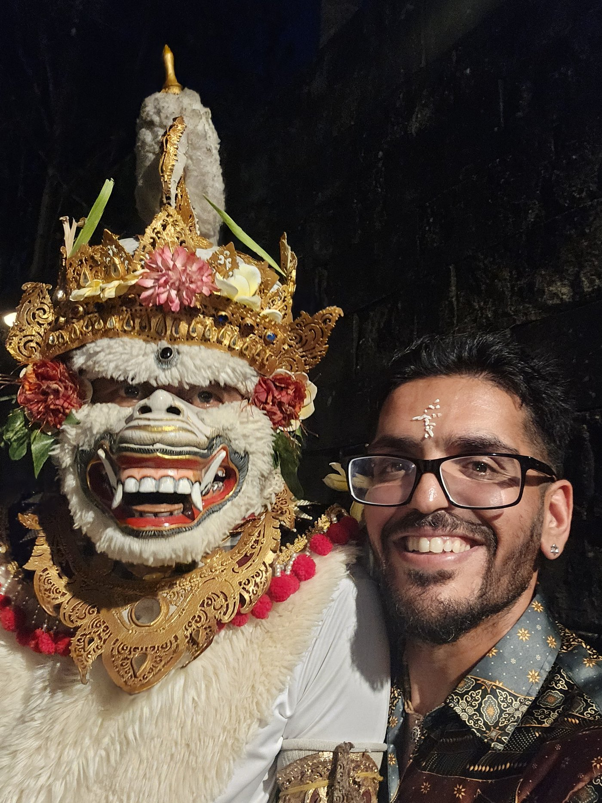
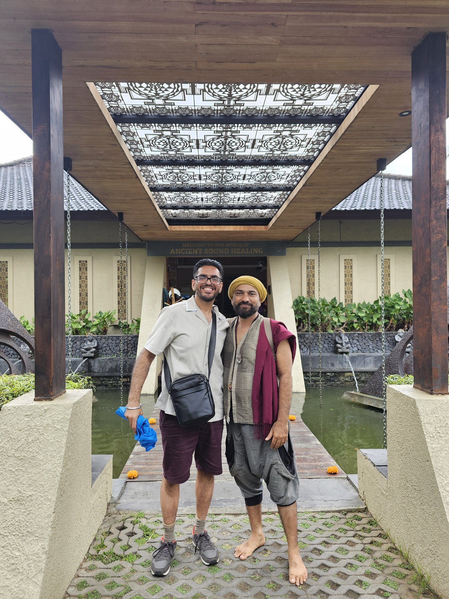

Every tradition gathered here starts from the same suspicion: that the person you take yourself to be — this name, this history, this bundle of wants — is not the whole story. Self-realization isn't a reward for years of discipline, and it isn't a feeling to chase. It's what's left when you stop mistaking the mind's noise for who's making it.
The thread running through all of it is presence: watching the mind's clutter instead of being run by it, staying with what's actually here instead of the story about it. Do that seriously enough, for long enough — keep asking who's aware of this — and the sense of being a separate someone doesn't need to be fought off. It just stops holding together on its own.
Eight teachers, eight roads — inquiry, silence, philosophy, wit — all pointing the same direction: inward, and then further in, until there's no one left standing between you and what's looking.
Eight voices · One thread: presence
A Zen journey to the self
About Sandeep

About three years ago, I lost someone close and cherished — my brother-in-law, Gurjit. His passing broke something open in me. It could have taken me down a darker road. Instead, it became the beginning of this one.
"Death is not the end, but the beginning of a new life."— Osho, Zarathustra: A God That Can Dance
I started by reading Autobiography of a Yogi and becoming a Kriyaban with Self-Realization Fellowship. Since then the path has widened — not into one voice, but eight, each of them seeming to speak to something the universe already wanted me to hear.
My religion, if I have one, is the self. Finding it is the whole practice — the rest, as they say, is Maya. I'm learning to stop playing the game and simply watch it, trusting that the universe gives what's needed, exactly when it's needed.
This site, and the journal behind it, exists in memory of Gurjit — who, without meaning to, showed me everything and set me on this path. Thank you, brother.
— Sandeep
In gratitude
My Master

This site has been made by the blessings of my Master, Maitreya Prema, whom I found in Bali and who is helping me on my journey to the self.
"I bow to the true Guru — the bliss of Brahman, giver of the highest joy, the very form of knowledge, beyond all opposites, vast as the sky; the one eternal, stainless, unmoving witness of every mind, beyond feeling, beyond the three gunas."— Guru Gita
Sri Gurubhyo Namah
Part One
Eight Voices
Sages, monks, philosophers, a relentless questioner of everything, and one teacher of plain presence — arranged roughly by the centuries they lived in.
Ramana Maharshi
1879 – 1950Advaita Vedanta · Tiruvannamalai, India
A South Indian sage who spent most of his life in near-silence at the foot of Arunachala hill. His teaching was radically simple: turn attention inward and hold the question "Who am I?" until the one asking dissolves into the Self that was never actually missing.
"For obtaining such knowledge the inquiry 'Who am I?' in quest of the Self is the best means."— Who Am I? (Nāṉ Yār?)
"A spurious 'I' arises between Pure Consciousness and the insentient body and imagines itself to be like a phantom. The phantom is the ego or mind or individuality."— Who Am I? (Nāṉ Yār?)
"The Guru is the Self."— Talks with Sri Ramana Maharshi
"Your own Self-Realization is the greatest service you can render the world."— Talks with Sri Ramana Maharshi
Nisargadatta Maharaj
1897 – 1981Advaita Vedanta (Navnath lineage) · Mumbai, India
A Bombay shopkeeper whose late-night talks with visitors were recorded and became the book I Am That. His teaching starts from the one thing no one can honestly deny — the plain sense "I am" — and uses it as a doorway back to what's aware before any story about being someone gets added on.
"Give up all questions except one: 'Who am I?' After all, the only fact you are sure of is that you are. The 'I am' is certain. The 'I am this' is not."— I Am That
"Wisdom tells me I am nothing. Love tells me I am everything. Between the two my life flows."— I Am That
"To know what you are, you must first investigate and know what you are not."— I Am That
"Once you know that you know nothing, you know everything."— I Am That
Bodhidharma
c. 5th – 6th centuryChan / Zen · India to China
A wandering monk, traditionally said to be from India, credited with carrying Chan Buddhism into China. Legend has him facing a wall in meditation for nine years; his teaching cuts straight past scripture and ritual toward "seeing one's own nature."
"Not thinking about anything is Zen. Once you know this, everything you do is Zen."— The Zen Teaching of Bodhidharma
"The mind is the root from which all things grow. If you can understand the mind, everything else is included."— The Zen Teaching of Bodhidharma
"Our nature is the mind. And the mind is our nature."— The Zen Teaching of Bodhidharma
"If you use your mind to study reality, you won't understand either your mind or reality."— The Zen Teaching of Bodhidharma
Alan Watts
1915 – 1973Zen & Taoism, for the West · England / USA
A British-born philosopher who spent decades translating Zen and Taoist thought for Western audiences through books, lectures, and radio. He treated the self not as a walled-off ego but as an expression of the very universe it thinks it's separate from.
"You are an aperture through which the universe is looking at and exploring itself."— Alan Watts
"You are a function of what the whole universe is doing in the same way that a wave is a function of what the whole ocean is doing."— Alan Watts
"Trying to define yourself is like trying to bite your own teeth."— Alan Watts
"We do not 'come into' this world; we come out of it, as leaves from a tree."— Alan Watts
D.T. Suzuki
1870 – 1966Zen Buddhism · Japan
The Japanese scholar most responsible for introducing Zen Buddhism to the West in the twentieth century. His essays treat enlightenment not as an idea to be understood but as a direct, everyday way of seeing.
"The idea of Zen is to catch life as it flows. There is nothing extraordinary or mysterious about Zen."— An Introduction to Zen Buddhism
"We teach ourselves; Zen merely points the way."— An Introduction to Zen Buddhism
"Zen perceives and feels, and does not abstract and meditate."— An Introduction to Zen Buddhism
"Emptiness which is conceptually liable to be mistaken for sheer nothingness is in fact the reservoir of infinite possibilities."— D.T. Suzuki
Nāgārjuna
c. 150 – 250 CEMadhyamaka · India
A second-century Indian philosopher and founder of the Madhyamaka, or "Middle Way," school of Buddhism. His central insight — that all things arise dependently and have no fixed, independent self — became the philosophical bedrock beneath Zen, Tibetan Buddhism, and much of Mahayana thought.
"Neither from itself nor from another, nor from both, nor without a cause, does anything whatever, anywhere arise."— Mūlamadhyamakakārikā
"Whatever is dependently co-arisen, that is explained to be emptiness. That, being a dependent designation, is itself the Middle Way."— Mūlamadhyamakakārikā, Ch. 24
"Since all is empty, all is possible."— Mūlamadhyamakakārikā
"Without recourse to the conventional, the ultimate cannot be shown."— Mūlamadhyamakakārikā
Osho
1931 – 1990Contemporary mysticism · India
An Indian mystic and teacher who built his work around meditation as immediate experience rather than doctrine. He taught "witnessing" — watching thought, feeling, and sensation without becoming them — as a direct route into awareness.
"Meditation means to be in non-doing. Meditation is not a doing but a state of being."— Osho
"You just be a watcher, and the miracle of watching is meditation."— Osho, on witnessing
"As you watch, slowly mind becomes empty of thoughts; but you are not falling asleep, you are becoming more alert, more aware."— Osho, on witnessing
"Mind cannot do anything about meditation. Mind is the absence of meditation."— Osho
"There is no bigger lie than death. And yet, death appears to be true."— Osho, And Now and Here
Eckhart Tolle
b. 1948Presence teaching · Germany / Canada
A contemporary teacher whose book The Power of Now reframed enlightenment as something available this instant, not earned through years of practice. His core claim: nearly all suffering comes from compulsive thinking and identification with the mind — presence, not belief, is the way out.
"Realize deeply that the present moment is all you have. Make the Now the primary focus of your life."— The Power of Now
"The mind always seeks to deny the Now and to escape from it. The more you are identified with your mind, the more you suffer."— The Power of Now
"Nothing has happened in the past; it happened in the Now. Nothing will ever happen in the future; it will happen in the Now."— The Power of Now
"Focus attention on the feeling inside you. Become aware not only of the emotional pain but also of 'the one who observes' — the silent watcher."— The Power of Now
Part Two
Reflections
Notes from my own sitting practice — not teaching, just tracking what actually happens when I sit.
Reading about presence and self-inquiry is one thing — sitting with it, daily, is another. The companion journal gives you a daily prompt, a self-inquiry practice, and a private place to write.